Carro Básico - Guía de Implementación¶
🚧 DOCUMENTO EN CONSTRUCCIÓN
Introducción¶
Las máquinas de estados que representan el comportamiento (lógica de control) de un automatismo industrial puede representarse utilizando diversos «lenguajes» de especificación. Tradicionales como los diagramas de relés y contactos o más actuales como el lenguaje GRAFCET.
El comportamiento especificado en estos diagramas, finalmente debe codificarse en un determinado lenguaje de programación para ser procesado por un PLC.
En esta guía se muestra como replicar paso a paso el «Carro Básico» en todas sus modalidades (básico, pulsado, temporizado, computado y señalizado), para lo que será necersario:
- Especificar una máquina de estados con el lenguaje GRAFCET.
- Especificar una máquina de estados con diagramas de relés y contactos.
- Implementar un GRAFCET, utilizando los lenguajes SFC, ST y LD de la norma IEC 61131-3.
- Implementar un diagrama de relés y contactos, utiliando el lenguaje LD de la norma IEC 61131-3.
- Utilizar los elementos básicos presentes en casi cualquier automatismo industrial: detección de flancos, evaluación de lapsos de tiempo, contaje de eventos.
Sugerencia
Pulsa en ➡️ para obtener más información sobre cómo realizar el paso especificado.
Especificación con GRAFCET¶
Carro Básico¶
El carro básico se desplaza longitudinalmente entre los extermos de una vía.
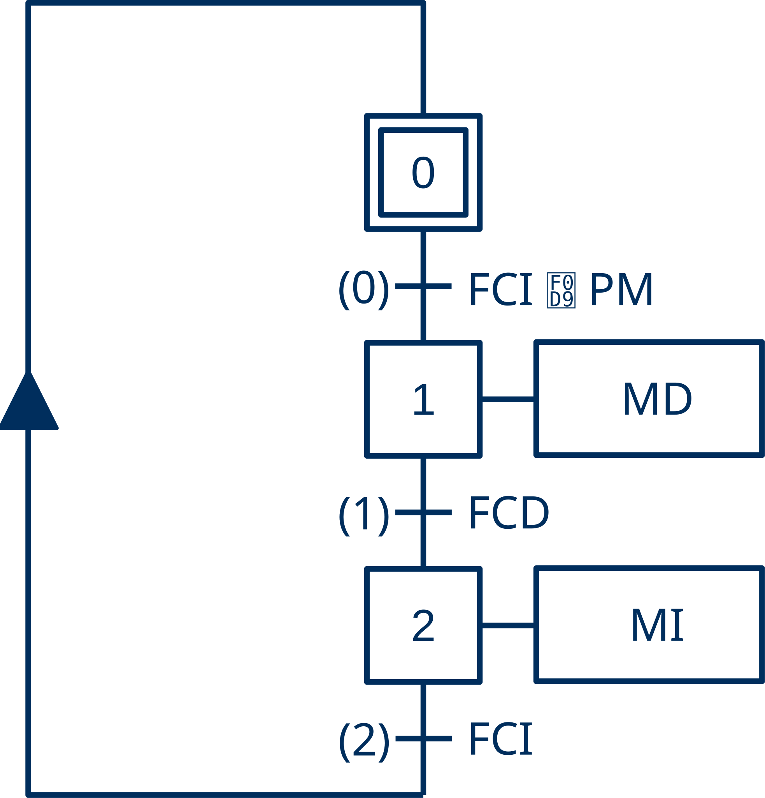
- Inicialmente el carro se encuentra detenido en la izquerda.
- Cuando se acciona el pulsador, se pone en marcha hacia la derecha.
- Cuando alcanza el extermo derecho, invierte el sentido de la marcha.
- Cuando alcanza el extremo izquierdo, se detiene.
Tabla de Variables
| Etiqueta | Origen | Tipo | Variable | Descripción |
|---|---|---|---|---|
| PM | Entrada | Binaria | i_PulsadorMarcha | Pulsador de Marcha |
| FCI | Entrada | Binaria | i_FinalCarreraIzquierda | Final de Carrera izquierda |
| FCD | Entrada | Binaria | i_FinalCarreraDerecha | Final de Carrera Derecha |
| MD | Salida | Binaria | o_MarchaDerecha | Marcha Derecha |
| MI | Salida | Binaria | o_MarchaIzquierda | Marcha Izquierda |
Nomenclatura
- Por conveniencia, en el diagrama grafcet se utilizan nombres cortos (etiquetas).
- Sin embargo, para obtener un código limpio los identificadores de las variables tienen una carga semántica clara que revela su propósito sin necesidad de comentario adicional.
Carro Pulsado¶
El carro pulsado inicia su viaje de ida y vuelta, únicamente, cuando estando en su posición inicial se acciona el pulsador de marcha.
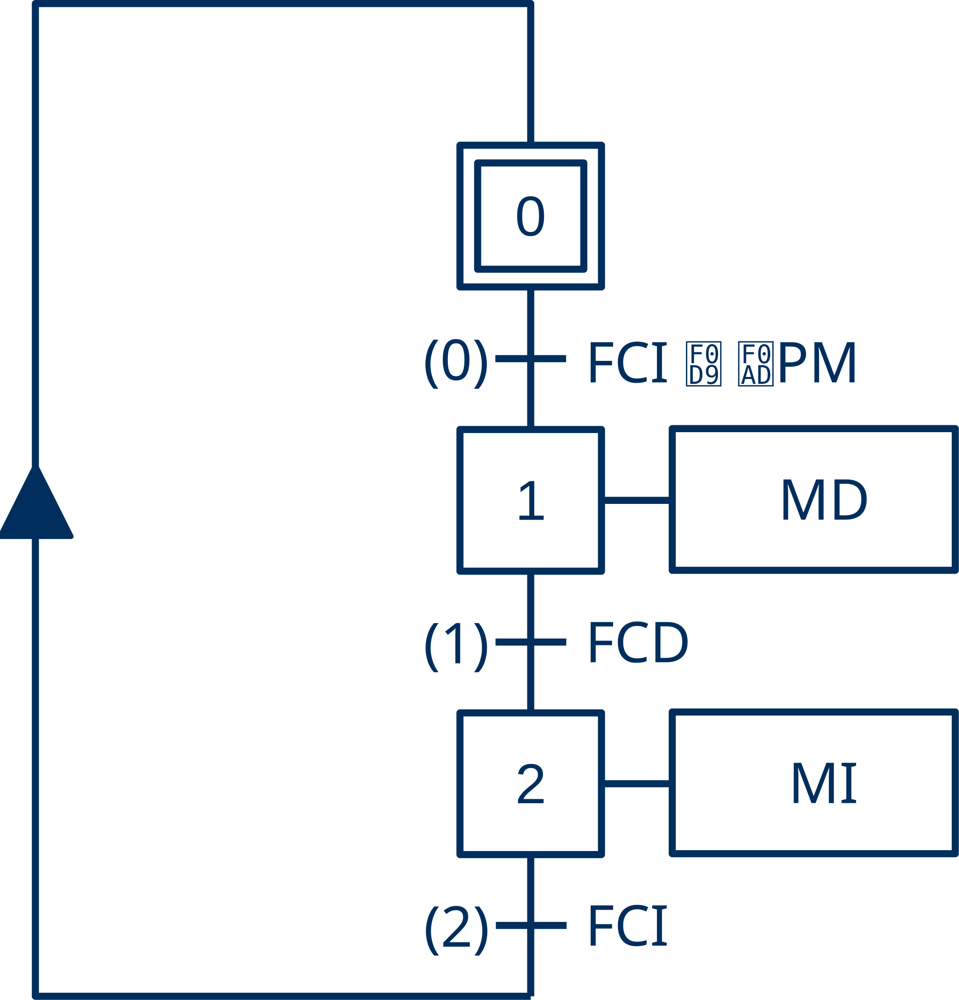
- Se añade la detección del flanco positivo del pulsador de marcha, que se representa en GRAFCET con el símbolo
↑.
Carro Temporizado¶
El carro temporizado se detiene durante un determinado tiempo (\(T_{espera}\)) sobre el final de carrera derecha antes de iniciar el camino de regreso hacia su posición inicial.
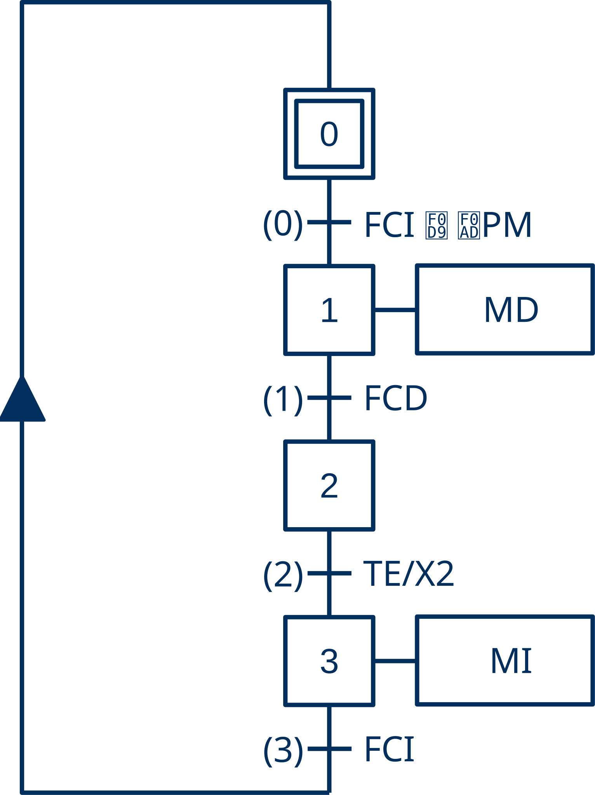
- La expresión
(TE)/X2es el símbolo GRAFCET (condición de transición dependiente del tiempo simplificada) utilizado para indicar que se esperará en la etapa2la cantidad de tiempo indicada porTE.
Carro Computado¶
El carro computado realiza un determinado número de viajes consecutivos de ida y vuelta (tarea) cada vez que, estando en su posición inicial, se acciona el pulsador de marcha.
Procesamiento por lotes
Con el carro computado se introduce el concepto de trabajo por lotes. En el trabajo por lotes el sistema hace una tarea por cada activación del pulsador de marcha sin intervención del operario, por lo que es necesario llevar la cuenta de los viajes (maniobras) que realiza el carro.
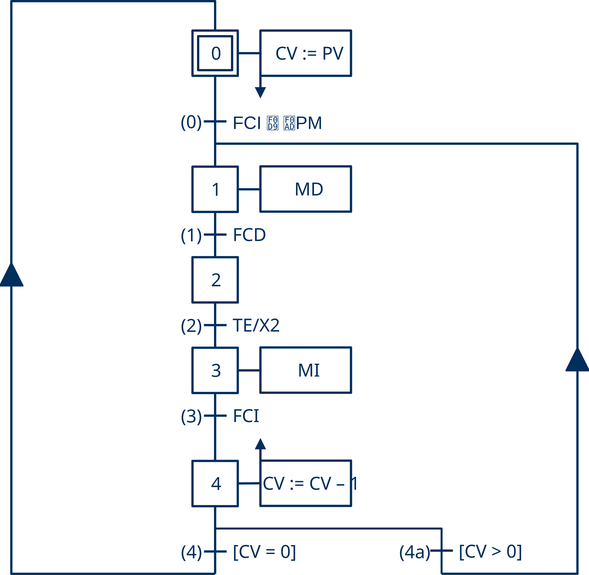
Para llevar esta cuenta en GRAFCET se acostumbra a distribuir esta funcionalidad entre la estructura y la interpretación.
- En la estructura se introduce una nueva etapa (
4) y una rama alternativa (4a) con la que evaluar si se la tareas ha terminado. - En la interpretación se incluyen dos acciones memorizadas, una asociada a la activación de la etapa inicial (
S0) para iniciar el contador de viajes pendientes y otra asociada a la entrada de la etapa final (S4) para actualizar el contador con cada maniobra finalizada.
Contadores
Por razones históricas, en automatización se suele utilizar cuentas regresivas. En los antiguos sistemas electromecánicos y de electrónica discreta, comprobar si un contador había finalizado su tarea era drásticamente más simple y económico si se comparaba con el cero absoluto. Esta comparación requiere únicamente un contacto físico o una sola compuerta lógica (NOR), independientemente del valor de la cuenta.
Esta lógica de diseño se heredada para optimizar el rendimiento en los procesadores de los PLC modernos, los cuales activan un indicador de estado (Zero Flag) al alcanzar el cero, evitando instrucciones de comparación adicionales y ofreciendo un control intrínsecamente más seguro ante desbordamientos.
Implementación por tipo de transcripción¶
GRAFCET a SFC¶
Carro Básico (GRAFCET a SFC)¶
- Abrir la aplicación TwinCAT XAE. ➡️
- Crear una solución de TwinCAT 3 con nombre
TC3_Carro_Basico. ➡️ - Ocultar las configuraciones innecesarias para dejar el explorador de la solución lo más despejado posible. ➡️
- Crear un proyecto PLC estándar con el nombre
Carro_Basico_PLC. ➡️ -
Crear una nueva Unidad de Organización de Programa (POU) de tipo Bloque Funcional. ➡️
Parámetros POU
- Nombre ➔
FB_Carro_GRF_SFC - Type ➔
Function Block - Implementation Language ➔
Sequential Function Chart (SFC)
- Nombre ➔
-
Declarar todas las variables de entrada/salida necesarias en
FB_Carro_SFCcomo variables locales (VAR_LOCAL). ➡️FUNCTION_BLOCK FB_Carro_GRF_SFC // Transcripción del grafcet (GRF -> SFC) VAR_INPUT END_VAR VAR_OUTPUT END_VAR VAR // Entradas i_PulsadorMarcha AT %I*: BOOL; i_FinalCarreraIzquierda AT %I*: BOOL := TRUE; i_FinalCarreraDerecha AT %I*: BOOL; // Salidas o_MarchaIzquierda AT %Q*: BOOL; o_MarchaDerecha AT %Q*: BOOL; o_LamparaMarcha AT %Q*: BOOL; END_VARVariables de Entrada y Salida
- Ocultamiento: las variables de entrada y salida se declaran como locales (
VAR) para ocultarlas, para protegerlas, para que no sean accesibles desde fuera del bloque funcional. - Direccionamiento: se declaran con el modificador
ATpara situarlas, según corresponda, en la Imagen de Entrada (%I) o en la Imagen de Salida (%Q). No se especifica la posición de memoria (*) para dejar que TwinCAT se encargue de asignarle la dirección. Cuando se construya el proyecto las instancias correspondientes a estas variables estarán disponibles en la secciónI/Opara ser vinculadas con las señales presentes en los canales de entrada y salida. - Valor Inicial: La variable
i_FinalCarreraIzquierdase inicia aTRUE. Aunque sea totalmente innecesario e incluso contradictorio, ya que las variables de entrada tomarán en el primer ciclo el valor que le corresponda según la señal de entrada a la que estén vinculadas. Establecer el valor inicial de algunas variables de entrada puede ser conveniente, desde un punto de vista práctico, cuando se ejecuta el código sin hardware (UmRT_Default), ya que así, cada vez que se reinicie la ejecución no hay que escribir uno a uno el valor de las variables que forman parte de la condición inicial.
- Ocultamiento: las variables de entrada y salida se declaran como locales (
-
Escribir el código SFC correspondiente al carro básico.
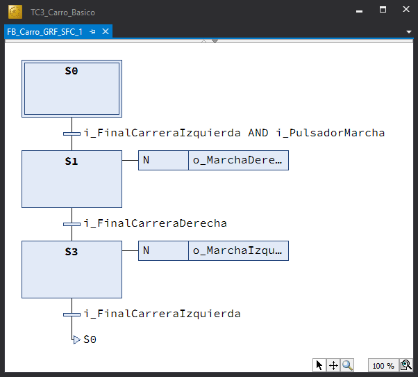
Código SFC
- En la transición S0-S1,
i_FinalCarreraIzquierdaes la Condicion Inicial yi_PulsadorMarchaes el evento que dispara la transición. - La Condición Inicial es la condición material (estado de los sensores) que se debe cumplir para iniciar la secuencia de funcionamiento con seguridad.
- En la transición S0-S1,
-
Declarar en
MAINuna instanciaCarrodeFB_Carro_GRF_SFC.PROGRAM MAIN VAR Carro: FB_Carro_GRF_SFC; END_VAR -
Escribir en
MAINel código, una sola línea con la invocación a la instanciaCarro.Carro(); -
Construir el proyecto (Build) para generar un archivo ejecutable. ➡️
- Si no se dispone de ningún sistema destino (local o remoto) con un runtime sobre el que ejecutar el código, activar el simulador
UmRT_Default. ➡️ - Seleccionar el sistema destino (Target System) sobre el que se vaya a ejecutar el programa (
UmRT_Default). ➡️ - Activar la licencia temporal del runtime del sistema destino si es necesario. ➡️
- Activar la configuración en el sistema destino. ➡️
- Conectarse (Login) al sistema destino para transferir el proyecto. ➡️
- Poner el programa de PLC en ejecución (Run). ➡️
-
Probar el programa forzando las variables de entrada en el modo de Monitorización Online. ➡️
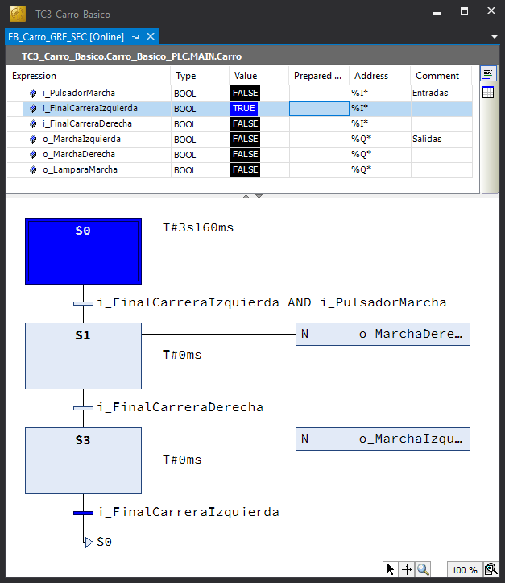
Monitorización Online
En el modo de Monitorización Online se muestra:
- En la parte de declaración ➔ el valor de las variables.
- En la parte de implementación ➔ las etapas y transiciones activas .
-
Crear una visualización mínima
V_Carroque facilite la prueba.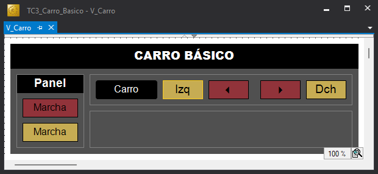
Visualización
- La visualización debe disponer al menos de:
- Un elemento gráfico para modificar el valor de cada sensor.
- Un elemento gráfico para mostrar el valor de cada actuador.
- Sin embargo, resulta conveniente, que tanto los objetos gráficos destinados a los sensores como a los actuadores permitan leer y escribir las señales correspondientes. De esta forma se facilitará la prueba cuando se ejecute con el simulador (UmRt_Default) sin hardware asociado y se facilitará el modo manual cuando se ejecute sobre un controlador con hardware asociado.
- En esta visualización
- La visualización debe disponer al menos de:
-
Probar el programa cambiando el valor de las entradas desde la visualización.
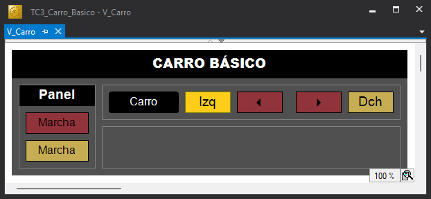
Visualización Online
Con la visualización Online se puede:
- conocer el valor de las variables de salida por su color de desactivación/activación.
- modificar el valor de las variables de entrda pulsando sobre el objeto gráfico.
Carro Pulsado (GRAFCET a SFC)¶
-
Añadir en
FB_Carro_GRF_SFCla declaración de una instancia del bloque funcionalR_TRIGde la librería estándar (Tc2_Standard) para la detección del flanco positivo del pulsador de marcha.FUNCTION_BLOCK FB_Carro_GRF_SFC // Transcripción del grafcet (GRF -> SFC) VAR_INPUT END_VAR VAR_OUTPUT END_VAR VAR // Bloques Funcionales FlancoPulsadorMarcha: R_TRIG; // Entradas i_PulsadorMarcha AT %I*: BOOL; i_FinalCarreraIzquierda AT %I*: BOOL := TRUE; i_FinalCarreraDerecha AT %I*: BOOL; // Salidas o_MarchaIzquierda AT %Q*: BOOL; o_MarchaDerecha AT %Q*: BOOL; o_LamparaMarcha AT %Q*: BOOL; END_VAR -
Añadir a
FB_Carro_GRF_SFCuna accióna_FlancoPulsadorMarcha_Evaluar(ST), en el que se invoque la ejecución del detector de flancoFlancoPulsadorMarcha.FlancoPulsadorMarcha(CLK := i_PulsadorMarcha); -
Incluir la acción
a_FlancoPulsadorMarcha_Evaluarcomo acción principal (Main action) en la etapa inicial (S0), para que se ejecute continuamente (una vez por ciclo) mientras el sistema esté en la etapa inicial. -
Sustituir
i_PulsadorMarchaporFlancoPulsadorMarcha.Q, en la condición de la transición de salida de la etapa inicial.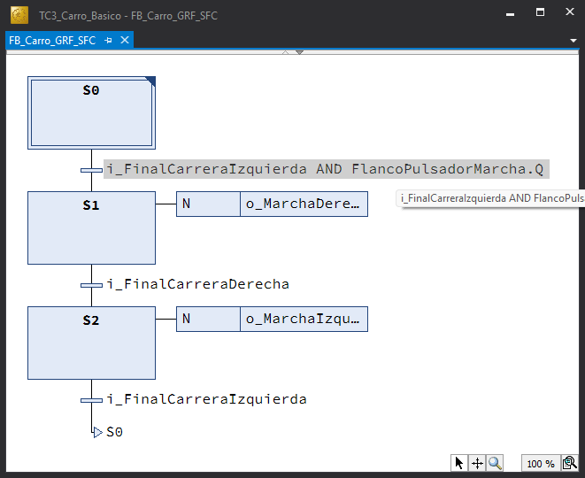
-
Modificar, nuevamente, el programa principal para que la instancia que se invoque ejecute el código de
FB_Carro_GRF_SFC, dejando sin comentar la acción correspondiente.PROGRAM MAIN VAR Carro: FB_Carro_GRF_SFC; // Carro: FB_Carro_GRF_ST; // Carro: FB_Carro_GRF_LD; END_VAR -
Poner el programa en ejecución y comprobar que no basta para iniciar la marcha con que el pulsador de marcha esté activado, sino que es necesario que se realice una acción de impulso.
Carro Temporizado (GRAFCET a SFC)¶
-
Añadir en
FB_Carro_GRF_SFCla declaración del parámetro de entradaTiempoEsperade tipoTIMEen el bloque de declaraciónVAR_INPUT. Esto permitirá que este parámetro pueda ser modificado desde fuera del bloque funcional. Eventualmente, puede indicarse un valor inicial en su defecto (T#2S). Y un parámetro de salidaTiempoPendienteen el bloque de declaraciónVAR_OUTPUTpara informar del tiempo de espera pendiente.FUNCTION_BLOCK FB_Carro_GRF_SFC // Transcripción del grafcet (GRF -> SFC) VAR_INPUT TiempoEspera: TIME := T#2S; END_VAR VAR_OUTPUT TiempoPendiente: TIME; END_VAR VAR // Bloques Funcionales FlancoPulsadorMarcha: R_TRIG; // Entradas i_PulsadorMarcha AT %I*: BOOL; i_FinalCarreraIzquierda AT %I*: BOOL := TRUE; i_FinalCarreraDerecha AT %I*: BOOL; // Salidas o_MarchaIzquierda AT %Q*: BOOL; o_MarchaDerecha AT %Q*: BOOL; o_LamparaMarcha AT %Q*: BOOL; END_VAR -
Añadir una nueva etapa para representar el estado de espera e incluir en la transición de salida la condición
S2.t > TiempoEspera, equivalente a la condición de tiempo del diagrama grafcetTE/X2.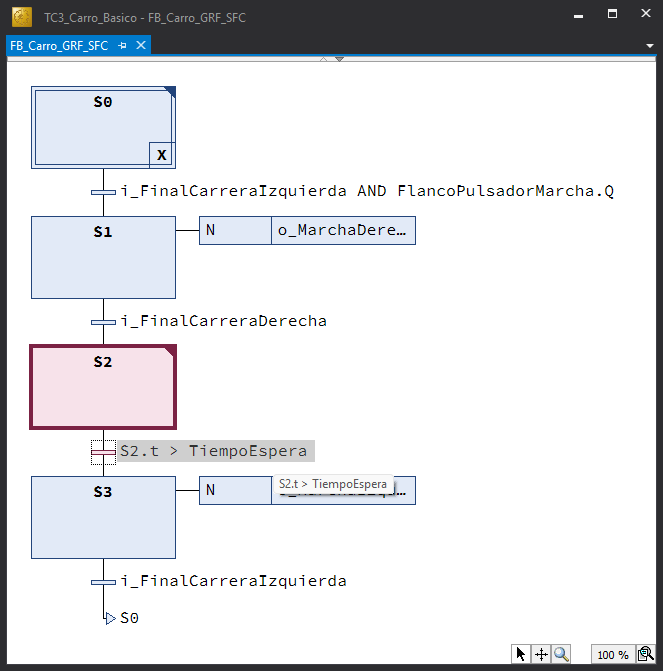
-
Añadir a FB_Carro_GRF_SFC una acción denominda
a_TiempoPendiente_Calcular({{ST}}), para calcular el tiempo de espera pendiente.IF TiempoEspera >= S2.t THEN TiempoPendiente := TiempoEspera - S2.t; ELSE TiempoPendiente := T#0S; END_IF;Programación Defensiva
La condición defensiva
TiempoEspera >= S2.tpreviene un desbordamiento negativo (underflow) en la resta, asegurando que el cálculo solo se realice cuando el resultado sea mayor o igual a cero. Además, la estructuraELSEgarantiza el determinismo del PLC al forzar explícitamente la variable aT#0S, evitando queTiempoPendienteretenga valores obsoletos de ciclos anteriores si la condición no se cumple. La Programación Defensiva usada en su justa medida se considera una buena práctica de programación que favorece el Código Limpio. -
Incluir la acción
a_TiempoPendiente_Calcularcomo acción principal (Main action) en la etapa de espera (S2). -
Incluir en la visualización
V_Carroun objeto gráfico que permita introducir el tiempo de espera deseado y otro que informe del tiempo pendiente.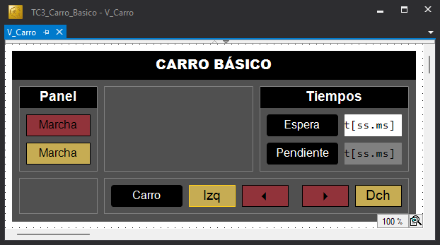
-
Proceder como en la sección anterior probar el programa desde la visualización.
Carro Computado (GRAFCET a SFC)¶
-
Añadir en FB_Carro_GRF_SFC la declaración de
- Un parámetro entero de entrada
ManiobrasTotalesen el bloque de declaraciónVAR_INPUTpara contener el valor del número total de maniobras deseadas. - Un parámetro entero de salida
ManiobrasPendientesen el bloque de declaraciónVAR_OUTPUTpara contener el número de maniobras pendientes de realizar.
FUNCTION_BLOCK FB_Carro_GRF_SFC VAR_INPUT TiempoEspera: TIME := T#2S; ManiobrasTotales: UINT := 2; END_VAR VAR_OUTPUT TiempoPendiente: TIME; ManiobrasPendientes: UINT; END_VAR VAR // Bloques Funcionales FlancoPulsadorMarcha: R_TRIG; // Entradas i_PulsadorMarcha AT %I*: BOOL; i_FinalCarreraIzquierda AT %I*: BOOL := TRUE; i_FinalCarreraDerecha AT %I*: BOOL; // Salidas o_MarchaIzquierda AT %Q*: BOOL; o_MarchaDerecha AT %Q*: BOOL; o_LamparaMarcha AT %Q*: BOOL; END_VAR - Un parámetro entero de entrada
-
Modificar el código:
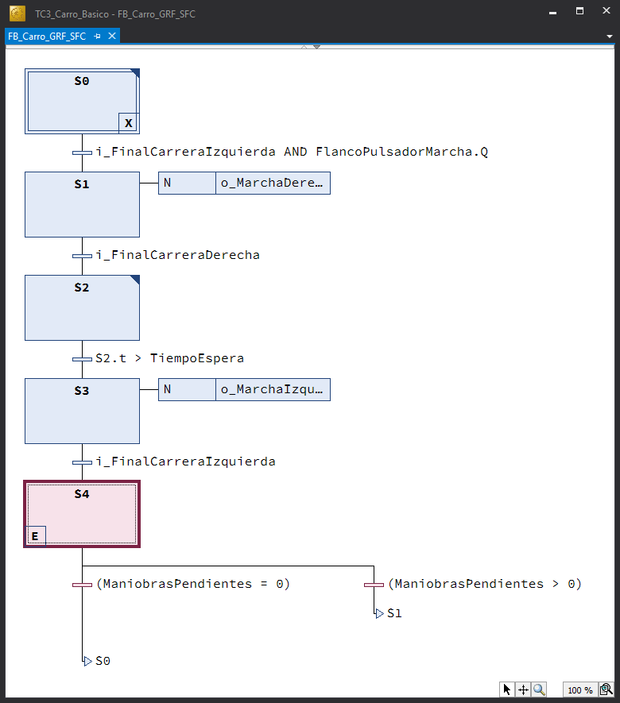
- Incluir una nueva etapa (
S4)al final de las secuencia para evaluar si terminó la tarea. - Incluir una rama alternativa con salto atrás a la primera etapa de la secuancia (
S1). - Se regresa a la etapa inicial por la rama principal si terminó la tarea (
ManiobrasPendientes = 0). - Se vuelve a la primera etapa de la secuencia (
S1) si quedan maniobra por realizar (ManiobrasPendientes > 0). -
Incluir una acción a_ManiobrasPendientes_Reiniciar para establecer el valor de la cuenta al iniciar la tarea y asociarla como acción a la salida a la etapa inicial (
S0).ManiobrasPendientes := ManiobrasTotales; -
Incluir una acción a_ManiobrasPendientes_Calcular para decrementar el valor de la cuenta con la finalización de cada maniobra y asociarla como acción a la entrada a la etapa final (
S4).IF (ManiobrasPendientes > 0) THEN ManiobrasPendientes := ManiobrasPendientes - 1; END_IF;
- Incluir una nueva etapa (
GRAFCET a ST¶
Carro Básico (GRAFCET a ST)¶
-
Añadir al proyecto un nuevo bloque funcional (
FB) al proyectoCarro_Basico_PLC. ➡️Parámetros POU
- Nombre ➔
FB_Carro_GRF_ST - Type ➔
Function Block - Implementation Language ➔
Structured Text
- Nombre ➔
-
Copiar el bloque de declaración de variables locales (
VAR) del FB anterior (FB_Carro_GRF_SFC), añadiendo una variable enteraEstadopara contener el valor del estado actual.FUNCTION_BLOCK FB_Carro_GRF_ST // Transcripción del grafcet (GRF -> ST) VAR_INPUT END_VAR VAR_OUTPUT END_VAR VAR Estado: UINT; // Entradas i_PulsadorMarcha AT %I*: BOOL; i_FinalCarreraIzquierda AT %I*: BOOL := TRUE; i_FinalCarreraDerecha AT %I*: BOOL; // Salidas o_MarchaIzquierda AT %Q*: BOOL; o_MarchaDerecha AT %Q*: BOOL; o_LamparaMarcha AT %Q*: BOOL; END_VAR -
Escribir el código {{ST}} correspondiente al carro básico.
// FUNCION DE ESTADO CASE Estado OF 0: // Reposo IF i_FinalCarreraIzquierda AND i_PulsadorMarcha THEN Estado := 1; END_IF; 1: // Marcha Derecha IF i_FinalCarreraDerecha THEN Estado := 2; END_IF; 2: // Marcha Izquierda IF i_FinalCarreraIzquierda THEN Estado := 0; END_IF; END_CASE; // FUNCION DE SALIDA o_MarchaDerecha := (Estado = 1); o_MarchaIzquierda := (Estado = 2);Implementación FB_Carro_GRF_ST
- La estructura de selección múltiple
CASE, permite evaluar elegantemente la función de transición entre estados expresada en el diagrama grafcet. Así, dependiendo del estado en el que se encuentre el sistemas ([0, 1, 2]) y los eventos de entrada (i_FinalCarreraDerecha,i_FinalCarreraIzquierda,... ) se calcula el nuevo estado asignando un nuevo valor a la variable Estado. - Las salidas se calculan, tal y como se especifica en el diagrama grafcet, a partir del estado (Salidas Continuas).
- La estructura de selección múltiple
-
Añadir a
MAINla declaración de una nueva instanciaCarrodeFB_Carro_GRF_STy comentar la anterior.PROGRAM MAIN VAR // Carro: FB_Carro_GRF_SFC; Carro: FB_Carro_GRF_ST; END_VARImplementación MAIN
Al compartir ambos bloques funcionales las mismas variables de entrada y salida:
- No es necesario volver a activar la configuración.
- Las rutas de los enlaces de los objetos gráficos con las variables son los mismos.
-
Repetir los pasos 10 a 16 de la sección anterior.
- Probar el programa desde la visualización accionando las entradas.
-
Cambiar la declaración de la variable Estación a tipo enumerado implícito/local.
FUNCTION_BLOCK FB_Carro_GRF_ST // Transcripción del grafcet (GRF -> ST) VAR_INPUT END_VAR VAR_OUTPUT END_VAR VAR Estado: (E_REPOSO, E_MARCHA_DERECHA, E_MARCHA_IZQUIERDA); // Entradas i_PulsadorMarcha AT %I*: BOOL; i_FinalCarreraIzquierda AT %I*: BOOL := TRUE; i_FinalCarreraDerecha AT %I*: BOOL; // Salidas o_MarchaIzquierda AT %Q*: BOOL; o_MarchaDerecha AT %Q*: BOOL; o_LamparaMarcha AT %Q*: BOOL; END_VAR -
Modificar la implementación sustituyendo los valores numéricos del estado por las etiquetas del tipo enumerado.
// FUNCION DE ESTADO CASE Estado OF E_REPOSO: IF i_FinalCarreraIzquierda AND i_PulsadorMarcha THEN Estado := E_MARCHA_DERECHA; END_IF; E_MARCHA_DERECHA: IF i_FinalCarreraDerecha THEN Estado := E_MARCHA_IZQUIERDA; END_IF; E_MARCHA_IZQUIERDA: // Marcha Izquierda IF i_FinalCarreraIzquierda THEN Estado := E_REPOSO; END_IF; END_CASE; // FUNCION DE SALIDA o_MarchaDerecha := (Estado = E_MARCHA_DERECHA); o_MarchaIzquierda := (Estado = E_MARCHA_IZQUIERDA);Enumerados
- Puede observarse la evidente mejora semántica que produce la utilización de enumerados. No es lo mismo referirse a los distintos estados con un simple número (que no dice nada) que con una etiqueta descriptiva.
- La utilización de enumerados hace innecesairo el uso de comentarios para aclarar el significado de los estados.
Carro Pulsado (GRAFCET a ST)¶
-
Añadir en
FB_Carro_GRF_STla declaración de una instancia del bloque funcionalR_TRIGde la librería estándar (Tc2_Standard) para la detección del flanco positivo del pulsador de marcha.FUNCTION_BLOCK FB_Carro_GRF_ST // Transcripción del grafcet (GRF -> ST) VAR_INPUT END_VAR VAR_OUTPUT END_VAR VAR Estado: (E_REPOSO, E_MARCHA_DERECHA, E_MARCHA_IZQUIERDA); // Bloques Funcionales FlancoPulsadorMarcha: R_TRIG; // Entradas i_PulsadorMarcha AT %I*: BOOL; i_FinalCarreraIzquierda AT %I*: BOOL := TRUE; i_FinalCarreraDerecha AT %I*: BOOL; // Salidas o_MarchaIzquierda AT %Q*: BOOL; o_MarchaDerecha AT %Q*: BOOL; o_LamparaMarcha AT %Q*: BOOL; END_VAR -
Modifica en la parte de implementación de
FB_Carro_GRF_STel código:- Añadir la instrucción correspondiente a la invocación del detector de flanco
FlancoPulsadorMarcha(CLK := i_PulsadorMarcha). - Sustituir en la expresión de la condición de transición de la etapa
E_REPOSO➔E_MARCHA_DERECHA,PulsadorMarchapor la salida de la instancia del bloque funcional que detecta los flancos positivos en la variable (FlancoPulsadorMarcha.Q).
// FUNCION DE ESTADO CASE Estado OF E_REPOSO: // Acción principal FlancoPulsadorMarcha(CLK := i_PulsadorMarcha); IF i_FinalCarreraIzquierda AND FlancoPulsadorMarcha.Q THEN Estado := E_MARCHA_DERECHA; END_IF; E_MARCHA_DERECHA: IF i_FinalCarreraDerecha THEN Estado := E_MARCHA_IZQUIERDA; END_IF; E_MARCHA_IZQUIERDA: // Marcha Izquierda IF i_FinalCarreraIzquierda THEN Estado := E_REPOSO; END_IF; END_CASE; // FUNCION DE SALIDA o_MarchaDerecha := (Estado = E_MARCHA_DERECHA); o_MarchaIzquierda := (Estado = E_MARCHA_IZQUIERDA); - Añadir la instrucción correspondiente a la invocación del detector de flanco
-
Modificar, una vez más, el programa principal
MAINpara que la instancia que se invoque ejecute el código deFB_Carro_GRF_ST, dejando sin comentar la acción correspondiente.PROGRAM MAIN VAR // Carro: FB_Carro_GRF_SFC; Carro: FB_Carro_GRF_ST; // Carro: FB_Carro_GRF_LD; END_VAR -
Poner el programa en ejecución y comprobar que no basta para iniciar la marcha con que el pulsador de marcha esté activado, sino que es necesario que se realice una acción de impulso.
Carro Temporizado (GRAFCET a ST)¶
-
Añadir en
FB_Carro_GRF_STla declaración:- Un parámetro de entrada
TiempoEsperade tipoTIMEen el bloque de declaraciónVAR_INPUT. Esto permitirá que este parámetro pueda ser modificado desde fuera del bloque funcional. Eventualmente, puede indicarse un valor inicial en su defecto (T#2S). - Un parámetro de salida
TiempoPendienteen el bloque de declaraciónVAR_OUTPUTpara informar del tiempo de espera pendiente. - Una nueva etiqueta
E_ESPERAcorrespondiente al estado de espera. - Una instancia
TemporizadorEsperadel bloque funcional Temporizador de Retardo a la Conexión (TON) de la libreria estándar para temporizar la espera.
FUNCTION_BLOCK FB_Carro_GRF_ST // Transcripción del grafcet (GRF -> ST) VAR_INPUT TiempoEspera: TIME := T#2S; END_VAR VAR_OUTPUT TiempoPendiente: TIME; END_VAR VAR Estado: (E_REPOSO, E_MARCHA_DERECHA, E_ESPERA, E_MARCHA_IZQUIERDA); // Bloques Funcionales FlancoPulsadorMarcha: R_TRIG; TemporizadorEspera: TON; // Entradas i_PulsadorMarcha AT %I*: BOOL; i_FinalCarreraIzquierda AT %I*: BOOL := TRUE; i_FinalCarreraDerecha AT %I*: BOOL; // Salidas o_MarchaIzquierda AT %Q*: BOOL; o_MarchaDerecha AT %Q*: BOOL; o_LamparaMarcha AT %Q*: BOOL; END_VAR - Un parámetro de entrada
-
Modificar en la parte de implementación de
FB_Carro_GRF_STel código:- Añadir la llamada a TemporizadorEspera.
- Modificar el estado futuro (E_MARCHA_IZQUIERDA ➔ E_ESPERA) de E_MARCHA_DERECHA
- Incluir el fragmento de código correspondiente al estado E_ESPERA.
// BLOQUES FUNCIONALES TemporizadorEspera(IN := (Estado = E_ESPERA), PT := TiempoEspera); // FUNCION DE ESTADO CASE Estado OF E_REPOSO: // Acción principal FlancoPulsadorMarcha(CLK := i_PulsadorMarcha); IF i_FinalCarreraIzquierda AND FlancoPulsadorMarcha.Q THEN Estado := E_MARCHA_DERECHA; END_IF; E_MARCHA_DERECHA: IF i_FinalCarreraDerecha THEN Estado := E_ESPERA; END_IF; E_ESPERA: // Acción principal IF (TiempoEspera >= TemporizadorEspera.ET) THEN TiempoPendiente := TiempoEspera - TemporizadorEspera.ET; END_IF; IF TemporizadorEspera.Q THEN Estado := E_MARCHA_IZQUIERDA; END_IF; E_MARCHA_IZQUIERDA: IF i_FinalCarreraIzquierda THEN Estado := E_REPOSO; END_IF; END_CASE; // FUNCION DE SALIDA o_MarchaDerecha := (Estado = E_MARCHA_DERECHA); o_MarchaIzquierda := (Estado = E_MARCHA_IZQUIERDA); -
Proceder como en la sección anterior probar el programa desde la visualización.
Carro Computado (GRAFCET a ST)¶
GRAFCET a LD¶
Carro Básico (GRAFCET a LD)¶
🚧 SECCIÓN EN CONSTRUCCIÓN
Carro Pulsado (GRAFCET a LD)¶
🚧 SECCIÓN EN CONSTRUCCIÓN
Carro Temporizado (GRAFCET a LD)¶
🚧 SECCIÓN EN CONSTRUCCIÓN
Carro Computado (GRAFCET a LD)¶
🚧 SECCIÓN EN CONSTRUCCIÓN
Especificación con Diagramas de Relés¶
Diagramas de relés a LD¶
Carro Básico (DRC a LD)¶
🚧 SECCIÓN EN CONSTRUCCIÓN
Carro Pulsado (DRC a LD)¶
🚧 SECCIÓN EN CONSTRUCCIÓN
Carro Temporizado (DRC a LD)¶
🚧 SECCIÓN EN CONSTRUCCIÓN
Carro Computado (DRC a LD)¶
🚧 SECCIÓN EN CONSTRUCCIÓN